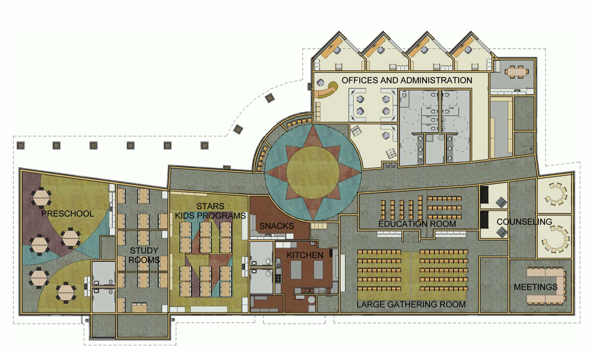
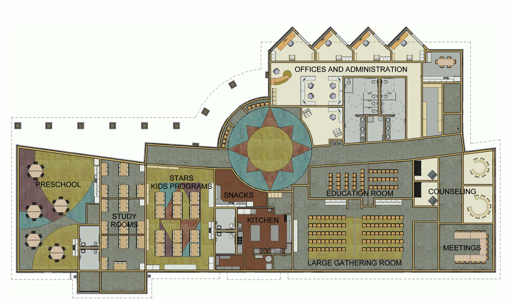

"Draw a one-mile circle around the campus of Theodore Judah elementary school, and you'll find over 90% of the people in our Folsom community who are in the greatest need."
-- Jeff Kreiser, Folsom's Hope Chairman of the Board.
 

Imagine a place where at-risk children and their families could come for help. Where kids could receive tutoring or mentoring. Where families could get counseling or parenting classes. Where Moms and Dads could take GED classes or get job training. A place where the community can come together.
And imagine if that place were located right in the middle of one of the most underserved areas of the Folsom community.
Folsom's Hope imagined such a place several years ago -- and we're well on the way to making it a reality. We have leased a parcel of land adjacent to Theodore Judah Elementary, completed the building design, and have raised XXX of the approximately $1M needed to build the facility. Our goal is to open the center to the Folsom community in XXX of 2017.
But we need your help to complete the project!
Please consider making a donation to bring this facility to life for the Folsom community.
Click on the "Donate" button below to make a contribution. For larger gifts, or gifts of non-cash assets, please contact Salwa Kasabian.
Thank you!!!
Volunteer. Donate. Review.
Learn more about our vision and plans for the community center from the Folsom's Hope team and our community partners.